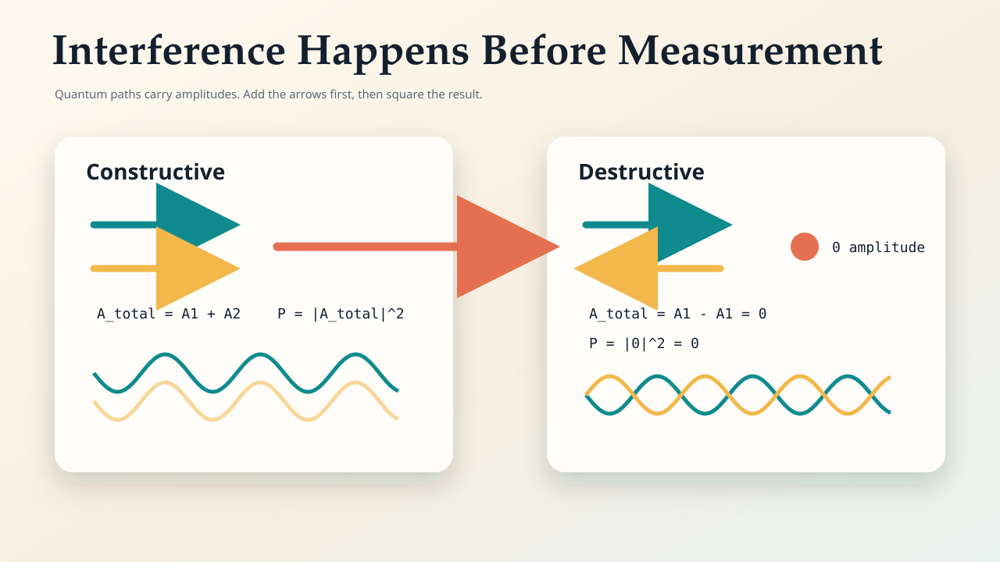
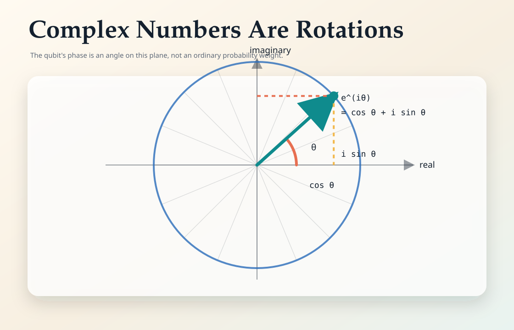
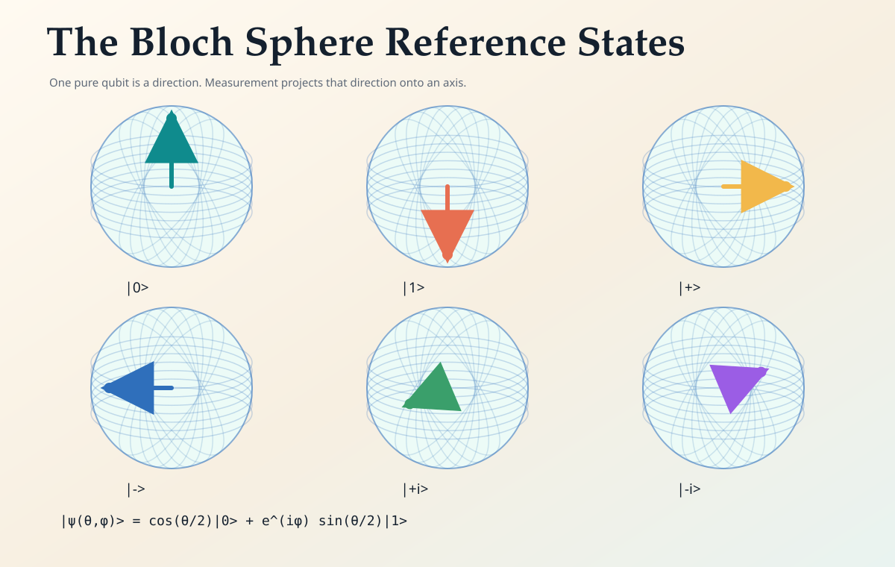
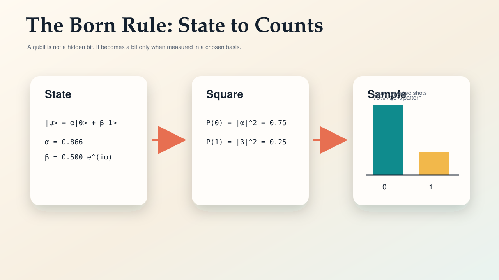
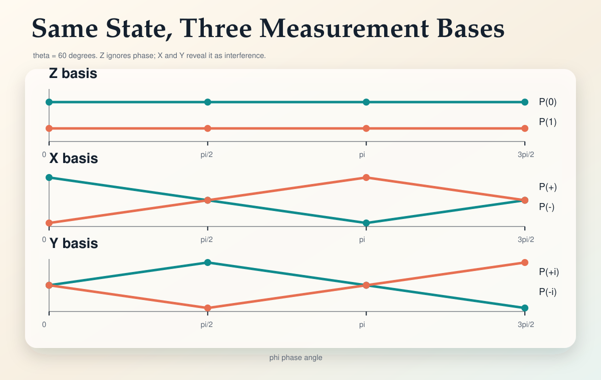
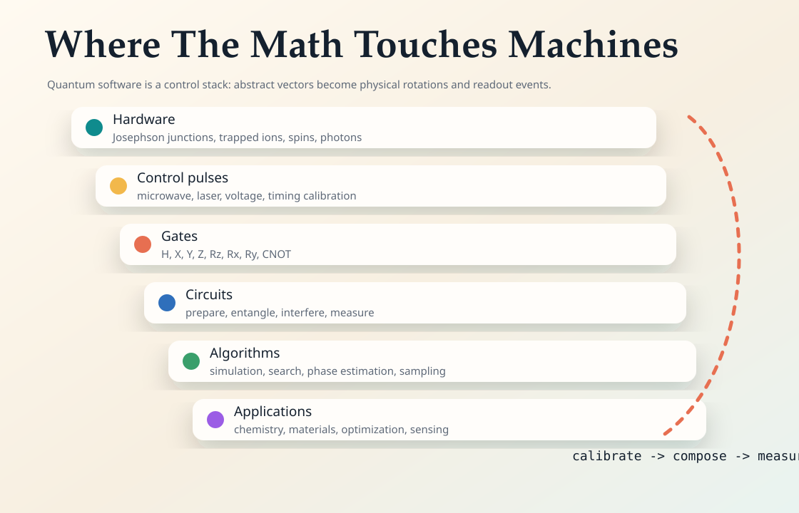

From Physical Surprise to Engineering Model
The book has a strong through-line: quantum computing becomes tractable when you stop thinking in hidden classical bits and start tracking amplitudes that can rotate, recombine, and cancel.
Why quantum alternatives add as signed, rotating quantities before probability exists.
2. Complex NumbersHow cos, sin, and Euler's formula become the language of phase.
3. QubitsWhat a qubit state is, how measurement works, and why the Bloch sphere helps.
4. TechnologyHow abstract rotations show up as pulses, gates, circuits, algorithms, and applications.
Quantum Adds Amplitudes, Not Probabilities
Classical probability is always nonnegative. Quantum amplitudes can point in opposite directions, so alternatives can cancel even when every individual path is physically allowed.
The one rule to keep close
When paths are indistinguishable, add their amplitudes first. Only after that do you square the magnitude to get a probability. This is the mechanism behind the double-slit pattern and the mechanism quantum algorithms try to exploit.
P = |Atotal|2
A quantum algorithm is often a carefully designed interference machine: amplify the states you want and cancel the states you do not.

The Minimum Math: Phase Is Rotation
Complex numbers are not decoration in quantum mechanics. They are the smallest practical language for rotation, oscillation, and interference.

Why real numbers are not enough
A real number can be positive or negative. A complex phase can point anywhere around a circle. That extra angular freedom is exactly what lets amplitudes move in and out of alignment.
i2 = -1
A Qubit Is a Direction, Not a Tiny Coin
A pure single-qubit state can be drawn as a point on the Bloch sphere. The north-south position fixes Z-basis probabilities; the angle around the equator stores phase.


|ψ(θ,φ)⟩ = cos(θ/2)|0⟩ + eiφ sin(θ/2)|1⟩
Phase Looks Invisible Until You Change Basis
With θ fixed at 60 degrees, the Z measurement probabilities stay fixed. X and Y measurements change because they recombine amplitudes differently.
State on the equatorial ring
Measurement probabilities

From Vectors to Hardware
The math becomes engineering when a physical platform gives you controllable rotations, interactions between qubits, and noisy measurements you can repeat many times.

How to read common gates
- X flips the state around the X axis, swapping |0⟩ and |1⟩.
- H changes between Z and X viewpoints, making interference visible in a different basis.
- Rz(φ), Rx(θ), and Ry(θ) are rotations on the Bloch sphere.
- CNOT couples qubits, which is where entanglement and multi-qubit algorithms begin.
Near-term systems are most compelling for simulation, sensing, chemistry, materials, sampling, and algorithm research where quantum interference is the core resource.
Things Worth Doing by Hand
These are small enough to compute with a notebook and valuable enough to make the abstractions stick.
Let A1 = 1 and A2 = -1. Add first, then square. Repeat with A2 = i.
Compute eiθ for θ = 0, π/2, π, 3π/2 and draw each point.
For θ = 60 degrees, calculate Z, X, and Y probabilities for the four phases in the lab.
Compact Reference
Amplitude: A complex quantity that is added before probability is computed.
Basis: The measurement viewpoint, such as Z, X, or Y for one qubit.
Born rule: The rule P = |amplitude|2 that turns state into measurement probabilities.
Bloch sphere: A geometric map of pure one-qubit states.
Phase: The angle of a complex amplitude. It matters when amplitudes recombine.
Qubit: A two-level quantum system whose state can interfere before measurement.
Unitary: A reversible state transformation. Single-qubit gates are rotations.
Shot: One execution and measurement of a circuit.